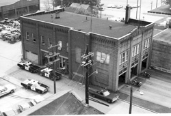

Ward-Thomas Museum


Alley Names in Niles
Ward — Thomas
Museum
Home of the Niles Historical Society
503 Brown Street Niles, Ohio 44446
Click here to become a Niles Historical Society Member or to renew your membership
Click on any photograph to view a larger image, click on image again to zoom into photograph.
|
Granite Alley between Lincoln and Washington Avenues. Pete’s Dairy was on the right side of the alley and Pearl Street. |
Alleys—A Relic from the Past. When homes were built in the late 1880s, the horses and carriage houses were located at a distance from the main house. Most of the first homes were built on small lots near the downtown area and alleyways provided access from the carriage houses to the main streets. Alleyways later offered access to your garbage cans for pickup. Even after homes were built on larger lots as the neighborhoods expanded with garages for cars, the alleyways remained. Many homeowners would utilize part of their backyards
for a garden and using a ‘Burn Barrel’ used to reduce
the trash with the ashes being scattered in the backyard gardens.
Alleys also provided quick access to your friend’s homes
when traveling on a bicycle and a path to walk to your neighbor’s
backyard to visit, even though you did not live on the same street. |
|
| |
||
| Alleyways in the northern triangle made by Vienna Avenue and Robbins Avenue. Between Crandon and Hartzell —
Hartzell Alley Harry Stevens Alley —
|
The second section of Niles Alleys is the area south of Robbins bordered by Mosquito Creek and the Mahoning River. Between Robbins and South — Phillips
Alley |
|
| |
||
|
The third section is the South Side. Between First and Third — Diamond Alley
|
 Franklin Alley PO1.178
Between West Park and Robbins — Pine
Alley |
|
|
|
||
The fifth and last section was the triangle made by the the Conrail tracks to Vienna Avenue, George, and Wilson Avenues. Between Vienna and West — Cherry Alley |
Information collected
by: Rebecca Archer DePanicis |
|
|
|
||
{kind=link}
{kind=link}